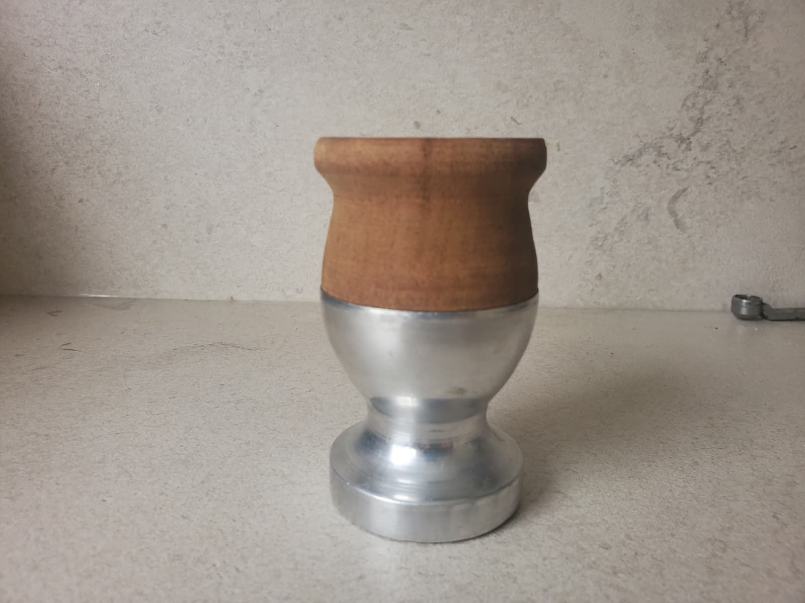

Mate de madera con base de aluminio

Mate artesanal que combina la calidez de la madera con la estabilidad del aluminio.
Características generales:
- Madera de calden y base de alumunio para un diseño elegante y funcional.
- Capacidad: 30 gramos de yerba o 120 ml.
- Medidas: 8 cm de alto y 7 cm de diámetro.
- Tradicional. Mate pequeño y funcional, ideal para llevar a cualquier lugar que queramos.